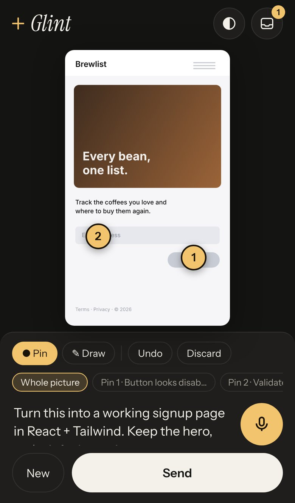
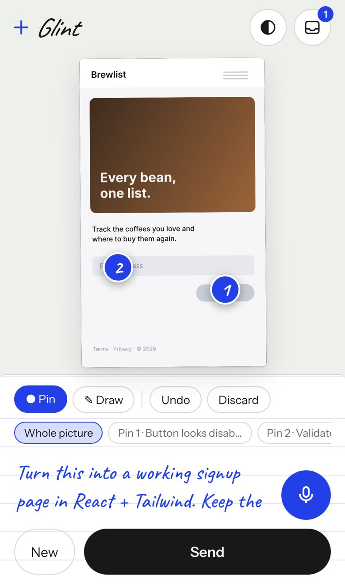
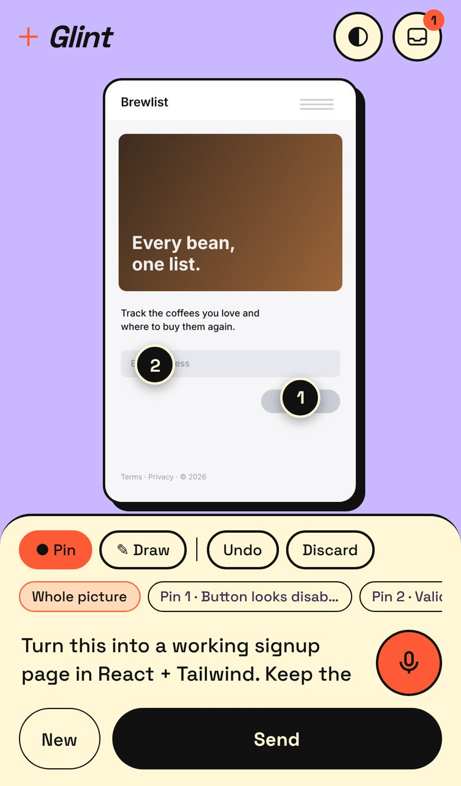

<title>Glint Product Brief</title>
<meta name="claude:viewport-fit-sides" content="cover">
<link rel="stylesheet" href="https://fonts.googleapis.com/css2?family=Instrument+Sans:wght@400;500;600&family=Instrument+Serif:ital@0;1&display=swap">
<style>
/* Layout: one readable column (~68ch) with full-width bands for the visual options and the film. */
:root{
  --bg:#f3f3f0; --surface:#ffffff; --fg:#161614; --muted:#5f5c55; --line:#dcdbd5; --accent:#94660d; --accent-soft:#f6ebd3;
  --hi:#b3261e; --med:#9a6200; --lo:#2f6b3a;
  --f-display:"Instrument Serif", Georgia, serif; --f-body:"Instrument Sans", system-ui, -apple-system, sans-serif;
}
@media (prefers-color-scheme:dark){:root:not([data-theme="light"]){--bg:#141413;--surface:#1d1c1a;--fg:#f2efe8;--muted:#a39e94;--line:#34322d;--accent:#f2c46d;--accent-soft:#2d2617;--hi:#ff8a80;--med:#f2c46d;--lo:#8fd19e;color-scheme:dark}}
:root[data-theme="dark"]{--bg:#141413;--surface:#1d1c1a;--fg:#f2efe8;--muted:#a39e94;--line:#34322d;--accent:#f2c46d;--accent-soft:#2d2617;--hi:#ff8a80;--med:#f2c46d;--lo:#8fd19e;color-scheme:dark}
body{background:var(--bg);color:var(--fg);font-family:var(--f-body);font-size:17px;line-height:1.6;padding-left:max(16px,env(safe-area-inset-left,0px));padding-right:max(16px,env(safe-area-inset-right,0px));padding-block:0 80px}
.col{max-width:720px;margin:0 auto}
.wide{max-width:1120px;margin:0 auto}
h1,h2,h3{font-family:var(--f-display);font-weight:400;letter-spacing:-.015em;text-wrap:balance;line-height:1.05}
h1{font-size:clamp(48px,9vw,92px);margin:0}
h1 i,h2 i{color:var(--accent)}
h2{font-size:clamp(34px,5vw,48px);margin:72px 0 18px}
h3{font-size:26px;margin:30px 0 8px}
p{margin:0 0 14px}
a{color:var(--accent)}
.eyebrow{font-size:12px;letter-spacing:.14em;text-transform:uppercase;color:var(--muted);font-weight:600}
header{padding-block:56px 10px}
.lede{font-size:21px;line-height:1.5;color:var(--fg);max-width:60ch;margin-top:20px}
.verdict{margin-top:30px;border:1px solid var(--line);background:var(--surface);border-radius:14px;padding:22px 24px;display:grid;gap:8px}
.verdict b{font-weight:600}
.links{display:flex;flex-wrap:wrap;gap:10px;margin-top:22px}
.btn{display:inline-flex;align-items:center;gap:8px;border-radius:999px;padding:11px 20px;text-decoration:none;font-weight:600;font-size:15px;border:1px solid var(--line);color:var(--fg);background:var(--surface)}
.btn.primary{background:var(--fg);color:var(--bg);border-color:var(--fg)}
.risks{display:grid;gap:12px;margin-top:10px}
.risk{display:grid;grid-template-columns:86px 1fr;gap:16px;border-top:1px solid var(--line);padding-top:14px}
.sev{font-size:11px;letter-spacing:.1em;text-transform:uppercase;font-weight:600;border-radius:6px;padding:3px 8px;align-self:start;text-align:center;border:1px solid currentColor}
.sev.hi{color:var(--hi)}.sev.med{color:var(--med)}.sev.lo{color:var(--lo)}
.risk h4{margin:0 0 4px;font-size:17px;font-weight:600}
.risk p{margin:0 0 6px;color:var(--muted)}
.risk .fix{color:var(--fg)}
.risk .fix b{color:var(--accent)}
.dirs{display:grid;grid-template-columns:repeat(3,minmax(0,1fr));gap:22px;margin-top:20px}
.dir figure{margin:0}
.dir img{width:100%;border-radius:22px;border:1px solid var(--line);display:block;aspect-ratio:390/844;object-fit:cover;object-position:top}
.dir figcaption{padding-top:12px}
.dir h3{margin:0 0 4px}
.dir p{font-size:15px;color:var(--muted);margin:0}
.rec{display:inline-block;font-size:11px;letter-spacing:.1em;text-transform:uppercase;font-weight:600;background:var(--accent-soft);color:var(--accent);border-radius:6px;padding:2px 8px;margin-left:6px;vertical-align:4px;font-family:var(--f-body)}
.flow{display:grid;grid-template-columns:repeat(3,minmax(0,1fr));gap:22px;margin-top:20px}
.flow img{width:100%;border-radius:18px;border:1px solid var(--line);display:block}
.flow b{display:block;margin-top:10px}
.flow span{color:var(--muted);font-size:15px}
ol.steps{padding-left:22px;margin:0}
ol.steps li{margin-bottom:10px}
.grid2{display:grid;grid-template-columns:repeat(2,minmax(0,1fr));gap:12px 28px}
.grid2>div{min-width:0}
ul{padding-left:20px;margin:0 0 14px}
li{margin-bottom:6px}
.film{display:grid;grid-template-columns:minmax(0,360px) minmax(0,1fr);gap:36px;align-items:start;margin-top:20px}
.film video{width:100%;border-radius:22px;border:1px solid var(--line);background:#000;display:block}
.beats{font-size:15px}
.beats div{display:grid;grid-template-columns:70px 1fr;gap:12px;border-top:1px solid var(--line);padding:9px 0}
.beats time{font-variant-numeric:tabular-nums;color:var(--muted)}
pre{background:var(--surface);border:1px solid var(--line);border-radius:12px;padding:16px;overflow-x:auto;font-size:13px;line-height:1.5}
code{font-family:ui-monospace,SFMono-Regular,Menlo,monospace;font-size:.88em}
.roadmap{display:grid;gap:0}
.phase{display:grid;grid-template-columns:120px 1fr;gap:18px;border-top:1px solid var(--line);padding:14px 0}
.phase b{font-family:var(--f-display);font-size:24px;font-weight:400;line-height:1.1}
.phase small{display:block;color:var(--muted);font-size:13px}
.note{font-size:14px;color:var(--muted)}
@media (max-width:800px){.dirs,.flow{grid-template-columns:1fr}.dir img{max-width:360px}.flow img{max-width:360px}.film{grid-template-columns:1fr}.grid2{grid-template-columns:1fr}.risk{grid-template-columns:1fr;gap:6px}.sev{justify-self:start}.phase{grid-template-columns:1fr;gap:4px}}
@media (prefers-reduced-motion:reduce){*{animation:none!important}}
</style>

<header class="col">
  <div class="eyebrow">Product brief · working name</div>
  <h1>Glint. See it. <i>Say it.</i> Send it.</h1>
  <p class="lede">Snap anything, tap where you mean, say what you want, and send it to your AI as one clean card. The goal: from idea to a bot that understands it in two taps.</p>
  <div class="verdict">
    <div><b>Verdict: buildable, and worth building, but not as "a camera with a text box".</b> The capture part is easy, and the phone makers and AI apps will give it away free. The part they won't build is <b>a neutral, spatial, voice-first inbox that any AI or agent can read from</b>. Build that and you have a product. Build only the camera screen and you have a feature someone else ships next spring.</div>
  </div>
  <div class="links">
    <a class="btn primary" href="https://claude.ai/artifact/43w6hWfMLSTT9aebzLvkzU" target="_blank" rel="noopener">Open the prototype</a>
    <a class="btn" href="#film">Watch the ad</a>
    <a class="btn" href="#directions">Pick a look</a>
  </div>
</header>

<section class="col">
  <h2>Why this could fail</h2>
  <p>Each risk below comes with a fix. The first three decide whether this is a company or a weekend project.</p>
  <div class="risks">
    <div class="risk"><span class="sev hi">High</span><div><h4>The platforms already do half of it</h4>
      <p>iOS has screenshot markup and Visual Intelligence. Android has Circle to Search. The ChatGPT, Claude and Gemini apps all have a camera button and voice. A single-shot "photo plus question" will be copied for free.</p>
      <p class="fix"><b>Fix:</b> don't compete on the shot. Compete where they can't follow. Be neutral across every AI. Make spatial intent (numbered pins tied to spoken notes) a first-class format. Keep an inbox you can batch from later ("ten captures from the shop floor, send to my coding agent tonight"). No AI app will make it easy to send your capture to a rival.</p></div></div>
    <div class="risk"><span class="sev hi">High</span><div><h4>The last mile to the bot is leaky</h4>
      <p>There's no universal API for "put this image and this text into the ChatGPT app". Share sheets sometimes drop the text, URL prompts can't carry images, and clipboards hold one thing at a time.</p>
      <p class="fix"><b>Fix (built in the prototype):</b> the prompt is <b>burned into the card</b>, so the image carries the instruction even if the text gets dropped. Modern models read the card fine. Each send also opens the AI with the prompt pre-filled and copies the card, ready to paste. Later, direct delivery: your own API key, an MCP server so agents can pull captures, and webhooks.</p></div></div>
    <div class="risk"><span class="sev hi">High</span><div><h4>"Fewest taps" hits the wall of the OS</h4>
      <p>A web app can't grab a global screenshot, sit on the lock screen, or wake from the Action button. iOS PWAs can't receive shares.</p>
      <p class="fix"><b>Fix:</b> ship the web app now to prove the loop. Then build thin native shells around the same core: an iOS share extension plus a Shortcut for the Action button or Back Tap, an Android Quick Settings tile and share target (the PWA already handles Android sharing), and a desktop hotkey via Tauri. Each shell only feeds captures into the same model.</p></div></div>
    <div class="risk"><span class="sev med">Medium</span><div><h4>Voice is flaky when whispered, noisy or accented</h4>
      <p>Browser speech recognition varies by browser, and Firefox has none.</p>
      <p class="fix"><b>Fix:</b> voice is one interface with swappable engines: Claude dictation, Web Speech, or the keyboard mic as a fallback. Next comes on-device Whisper for whispering and privacy. The transcript always stays editable.</p></div></div>
    <div class="risk"><span class="sev med">Medium</span><div><h4>Screenshots hold secrets</h4>
      <p>Bank balances, faces, DMs. One leak story and you're finished.</p>
      <p class="fix"><b>Fix:</b> local-first. The prototype keeps everything in the browser and sends nothing until you choose a destination. Next: one-tap blur and auto-redaction of faces, emails and card numbers before a card leaves the device.</p></div></div>
    <div class="risk"><span class="sev med">Medium</span><div><h4>Low frequency, so low retention</h4>
      <p>A utility you open twice a week gets forgotten.</p>
      <p class="fix"><b>Fix:</b> the inbox and threads turn one-off shots into an ongoing project log. Add a daily "loose ends" digest and destinations that close the loop, like Claude Code, Linear and GitHub issues, so captures become shipped work.</p></div></div>
    <div class="risk"><span class="sev lo">Low</span><div><h4>Money</h4>
      <p class="fix"><b>Fix:</b> the core is free forever: capture, pins, voice and share. Pro adds direct agent delivery, sync, redaction and longer voice. Teams get a shared inbox, so designers, QA and field staff can send captures to the team's agents.</p></div></div>
  </div>

  <h2>Why it can work</h2>
  <ul>
    <li><b>The behaviour already exists.</b> People already screenshot, open a chat, upload, and type "the button on the right". Glint removes the six steps in the middle.</li>
    <li><b>Pins are better prompts.</b> "Make ① bigger, delete ②" beats "the thing in the top left". This is a real quality gain for the AI, not just convenience.</li>
    <li><b>The card is the growth loop.</b> Every send creates a good-looking artifact that people post. "Here's how I prompt" is already a genre on social media.</li>
    <li><b>Agents need input.</b> Coding and design agents are starved of real-world context. A neutral capture inbox they can read from is infrastructure, and that's where the long runway is.</li>
  </ul>
</section>

<section class="wide" id="directions">
  <div class="col" style="max-width:720px">
    <h2>Pick a look</h2>
    <p>These are real screenshots of the working prototype. All three ship in it: tap the half-moon button in the top bar to switch. Tell me which one wins and I'll make it the only one.</p>
  </div>
  <div class="dirs">
    <div class="dir"><figure><figcaption><h3>Lens <span class="rec">Recommended</span></h3><p>Graphite and a single gold glint. It feels like a premium camera: quiet, confident, and it disappears behind your photo. It's the safest fit for "simple, with class".</p></figcaption></figure></div>
    <div class="dir"><figure><figcaption><h3>Paper</h3><p>An index card and a blue felt-tip. Notes look handwritten, so cards feel human and very shareable. It suits designers, teachers and planners.</p></figcaption></figure></div>
    <div class="dir"><figure><figcaption><h3>Signal</h3><p>Lilac, ink outlines and orange stickers. It's loud and playful, made for TikTok and Gen Z. It has the highest viral ceiling and the lowest "pro tool" credibility.</p></figcaption></figure></div>
  </div>
</section>

<section class="col">
  <h2>The prototype, and how to use it</h2>
  <div class="links" style="margin-top:0"><a class="btn primary" href="https://claude.ai/artifact/43w6hWfMLSTT9aebzLvkzU" target="_blank" rel="noopener">Open Glint</a></div>
  <ol class="steps" style="margin-top:20px">
    <li><b>Shoot.</b> Tap the big shutter. On a phone it opens your camera. You can also pick a photo, paste a screenshot (Ctrl/⌘ V), drop a file, or tap <i>Try the sample</i>.</li>
    <li><b>Point and say.</b> Tap the picture to drop a numbered pin. Hold the mic and talk, then let go. Your words go to the selected pin, or to the whole picture. A quick tap on the mic toggles listening instead. Draw mode lets you circle things.</li>
    <li><b>Send.</b> Tap Send. You'll see the card (photo, pins and note in one image) and your destinations: <b>Ask Claude here</b> answers right in the page; <b>Claude</b> and <b>ChatGPT</b> open with your prompt filled in and the card copied to paste; plus Gemini, Copy and Save. Next time the Send button remembers your favourite, so it's one tap.</li>
  </ol>
  <p class="note">In the standalone phone version (once this repo's Pages site is live at <code>/glint/</code>), the camera is live in the app. Tap to shoot, or <b>hold the shutter to shoot and talk in one gesture</b>, then let go. That's the two-tap flow from the ad. It also gets the native share sheet (straight into the ChatGPT or Claude app) and Android "Share → Glint". Add it to your home screen and it opens like an app.</p>
  <div class="flow">
    <div><b>1 · Capture</b><span>Camera, paste, drop, screen grab</span></div>
    <div><b>2 · Pin and talk</b><span>Spatial notes, voice first</span></div>
    <div><b>3 · Send</b><span>One card, any AI</span></div>
  </div>

  <h3>What's good</h3>
  <div class="grid2">
    <div><ul><li>Pins plus voice produce a structured prompt: "1. … [78% across, 75% down]".</li><li>The prompt-in-image card works even when an app drops the text.</li><li>Local-first inbox. Nothing leaves the device until you send.</li></ul></div>
    <div><ul><li>Every feature checks what the device can do, then degrades gracefully: live camera or native camera, dictation or keyboard mic, share sheet or copy.</li><li>Works offline as an installable app, and handles Android share-in.</li></ul></div>
  </div>
  <h3>What isn't real yet</h3>
  <ul><li>No sync, accounts or direct API delivery to ChatGPT or Claude. Sends go through links, the clipboard and the share sheet.</li><li>Gemini can't take a pre-filled prompt by link, so you paste.</li><li>Inside Claude, the camera is your phone's native camera, not a live viewfinder. That's a sandbox limit, not a design choice.</li></ul>
</section>

<section class="col">
  <h2>Made to spread</h2>
  <div class="grid2">
    <div><h3 style="margin-top:0">Built in now</h3><ul>
      <li><b>The card.</b> Every send is a postable image with a small "✦ glint" mark you can switch off.</li>
      <li><b>One-tap repeat.</b> Send remembers your favourite AI.</li>
      <li><b>Link previews.</b> The installable app has an icon and Open Graph image for shared links.</li></ul></div>
    <div><h3 style="margin-top:0">Add next</h3><ul>
      <li><b>Before → After card:</b> your capture next to the AI's result, the format people screenshot most.</li>
      <li><b>Prompt remix links:</b> share a card, and a friend opens it in Glint with your pins as a template.</li>
      <li><b>#SeeSaySend challenge:</b> "fix my room / outfit / UI in two taps", seeded with creators.</li>
      <li><b>Agent-native launch:</b> "the inbox for your agents" on Product Hunt and Hacker News, with the MCP server as the hook.</li></ul></div>
  </div>
</section>

<section class="wide" id="film">
  <div class="col"><h2>The ad</h2><p>33 seconds, 9:16 for Reels, TikTok and Shorts, with a 16:9 cut for X, YouTube and LinkedIn. The soundtrack is generated from code, so there are no music licences to worry about.</p></div>
  <div class="film col" style="max-width:900px">
    <video src="glint-ad-9x16.mp4" poster="poster.jpg" controls playsinline preload="metadata"></video>
    <div class="beats">
      <div><time>0:00</time><span>"You see it." Slow push into a real photo.</span></div>
      <div><time>0:03</time><span>"You think it." A glint lands on the collar.</span></div>
      <div><time>0:06</time><span>"Then the friction." Seven steps tick off, a tap counter climbs to 11, "…and the idea is gone."</span></div>
      <div><time>0:11</time><span>The spark becomes the Glint wordmark. "From idea to AI in two taps."</span></div>
      <div><time>0:13</time><span>The demo. Tap, shoot. Hold and say it, as words stream in and pin ① drops on the collar. Tap, sent, and Claude replies. The counter reads 2.</span></div>
      <div><time>0:25</time><span>Montage: a UI screenshot to Claude Code, fabric swatches to ChatGPT, a whiteboard sketch to Claude.</span></div>
      <div><time>0:30</time><span>"See it. Say it. Send it." ✦ Glint.</span></div>
    </div>
  </div>
</section>

<section class="col">
  <h2>Built for a long runway</h2>
  <p>One rule holds the system together: <b>everything is an adapter around a single capture format.</b> New devices, new voice engines and new AIs plug in without touching the core.</p>
<pre><code>Capture {
  id, created,
  img: Blob, w, h,                // normalised, long edge ≤ 2400px
  note: string,                   // whole-picture intent
  pins:   [{ n, x, y, text }],    // x,y are 0–1, so they survive any resize
  strokes:[[{ x, y }]],
  sent:   [{ to, at }]
}

Sources       camera · file · paste · drop · screen · share-target   (+ iOS share ext, hotkey, glasses)
Voice         claude dictation · web speech · keyboard                (+ on-device whisper)
Destinations  share · claude · chatgpt · gemini · copy · save · ask   (+ API key, MCP, webhook, Linear, GitHub)
Storage       IndexedDB, local-first                                  (+ encrypted sync)</code></pre>
  <div class="roadmap">
    <div class="phase"><div><b>Now</b><small>this prototype</small></div><div>Installable web app, three looks, pins, voice, card, inbox, six destinations, offline, Android share-in.</div></div>
    <div class="phase"><div><b>Next</b><small>4–6 weeks</small></div><div>iOS share extension and Shortcut (Action button / Back Tap), redaction, before/after cards, direct sending with your own API key, remix links.</div></div>
    <div class="phase"><div><b>Then</b><small>quarter</small></div><div>MCP server and webhooks (agents pull from your inbox), threads per project, batch "send all as one brief", sync, and the team inbox.</div></div>
    <div class="phase"><div><b>Later</b><small>runway</small></div><div>Glasses and wearables as a source, short video and screen-recording captures, live "point and ask" mode, and closed loops where agents reply with results onto the original card.</div></div>
  </div>
  <p class="note" style="margin-top:28px">"Glint" is a working name. Several products already use it, so check trademarks before you buy a domain. Alternatives: Pinprompt, Marginal, Saysnap.</p>
</section>
